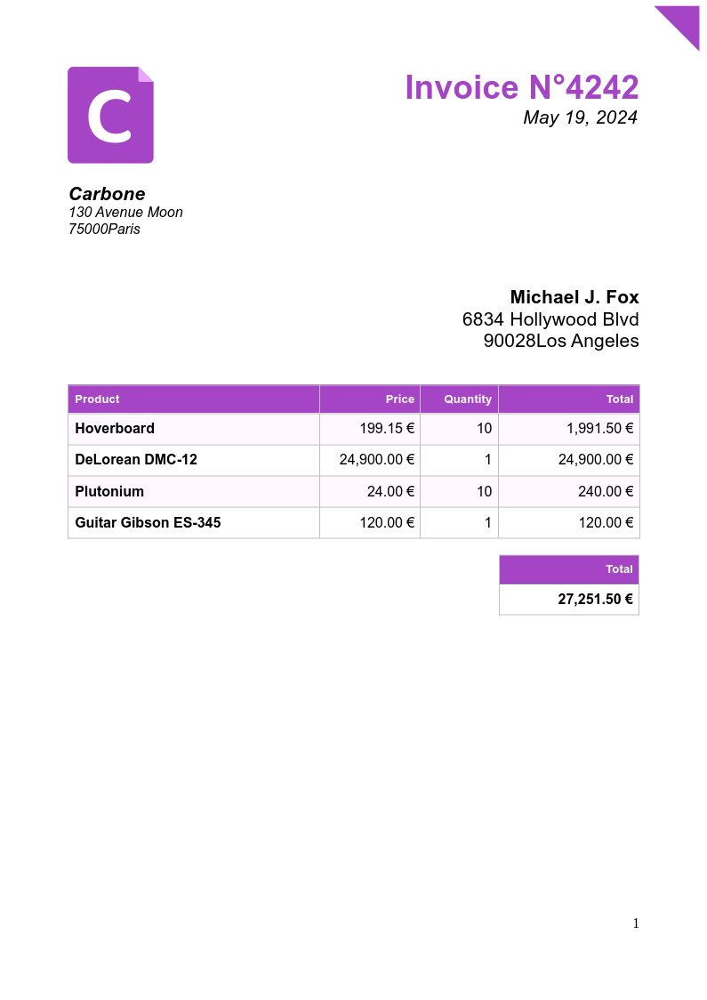
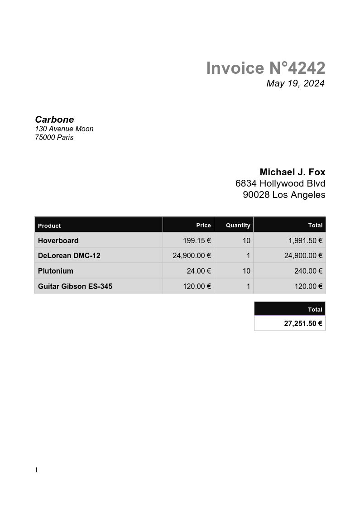

financial_chart

| Documents / min
1 CPU · 1 VU | Documents / min
4 CPU · 5 VU |
Pages / s
on 1 page |
|
|---|---|---|---|
| DOCX → DOCX merge only | 5,788 12 ms | 10,619 40 ms | 106 |
| DOCX → PDF | |||
| Carbone ICE | 1,517 49 ms | 7,959 56 ms | 26 |
| LibreOffice | 492 153 ms | 2,070 197 ms | 9 |
| OnlyOffice | 113 562 ms | 450 952 ms | 2 |
invoice_simple

| Documents / min
1 CPU · 1 VU | Documents / min
4 CPU · 5 VU |
Pages / s
on large documents |
|
|---|---|---|---|
| DOCX → DOCX merge only | 10,302 7.5 ms | 17,871 24 ms | 1,059 |
| DOCX → PDF | |||
| Carbone ICE | 2,842 24 ms | 13,856 29 ms | 141 |
| LibreOffice | 1,144 60 ms | 5,796 63 ms | 5 |
| OnlyOffice | 245 249 ms | 934 434 ms | 26 |
ticket_qrcode
| Documents / min
1 CPU · 1 VU | Documents / min
4 CPU · 5 VU |
Pages / s
on large documents |
|
|---|---|---|---|
| DOCX → DOCX merge only | 2,738 28 ms | 6,053 79 ms | 446 |
| DOCX → PDF | |||
| Carbone ICE | 1,544 44 ms | 5,628 73 ms | 217 |
| LibreOffice | 755 88 ms | 3,516 103 ms | 79 |
| OnlyOffice | 174 360 ms | 699 566 ms | 63 |
invoice_simple

| Documents / min
1 CPU · 1 VU | Documents / min
4 CPU · 5 VU |
Pages / s
on large documents |
|
|---|---|---|---|
| HTML → HTML merge only | 14,214 6.9 ms | 63,102 6.5 ms | 2,367 |
| HTML → PDF | |||
| Chromium | 4,954 14 ms | 21,804 16 ms | 80 |
Previous benchmarks
Each campaign writes a dated page. Latest is also index.html.
- 2026-09-22 13:51:36 UTC — this report
- 2026-08-28 13:29:34 UTC · 38 runs
- 2026-08-27 20:56:21 UTC · 34 runs